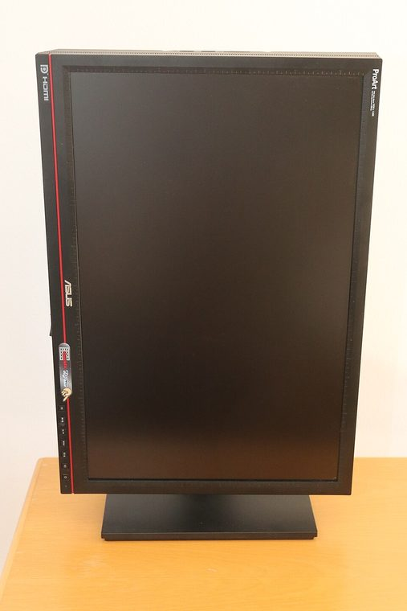
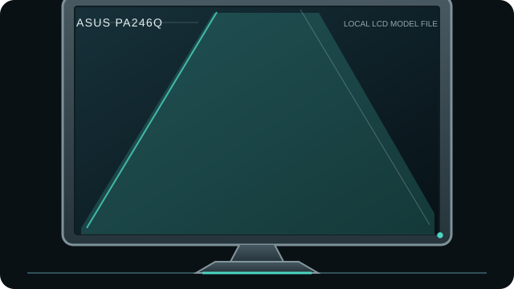

[ INDIVIDUAL COMPONENT // DISPLAYS ]
ASUS ProArt PA246Q
24.1-inch WUXGA professional LCD with wide-gamut P-IPS panel and period-appropriate analog and digital inputs.


IDENTIFICATION: Match the complete model and regional suffix on the rear label. This record summarizes published specifications; it is not a substitute for the exact unit manual, cable requirements or physical condition check.
Specifications
| Catalog subcategory | LCD displays |
|---|---|
| Exact product / family | ASUS ProArt PA246Q |
| Panel and native resolution | 24.1-inch P-IPS LCD, 1920 × 1200 (16:10) |
| Native timing | 1920 × 1200 at up to 60 Hz |
| Inputs / companion ports | DisplayPort, HDMI, dual-link DVI-D, VGA; USB 2.0 hub and card reader |
| Revision and model distinction | Identify PA246Q from the rear model label; do not substitute PA248Q/PA248QV documentation. Region bundles and firmware/software support can differ. Advertised 10-bit input/output depends on the signal path and compatible GPU; it does not mean every host produces an end-to-end 10-bit workflow. |
Host compatibility and connection notes
A workstation can use the native 1920 × 1200 timing over DisplayPort or DVI; HDMI/VGA compatibility depends on the source timing and cable. USB peripherals and card-reader functions require the upstream USB connection. This is not a USB-C display.
Wide-gamut output may render unmanaged sRGB content oversaturated. Use a color-managed host and a current measurement device/software; retain any unit-specific calibration report.
Preservation notes
Record the rear-label model, serial/date code, included stand/accessories, tested input, source timing, image condition and calibration state. Keep the matching manual and cable/adaptor chain with the unit; use qualified service procedures for internal work.
Manufacturer documentation and sources
- ASUS — PA246Q support and manualsManufacturer documentation for the exact PA246Q family.
- Digit — ASUS PA246Q reviewIndependent model-specific review and original assessment.